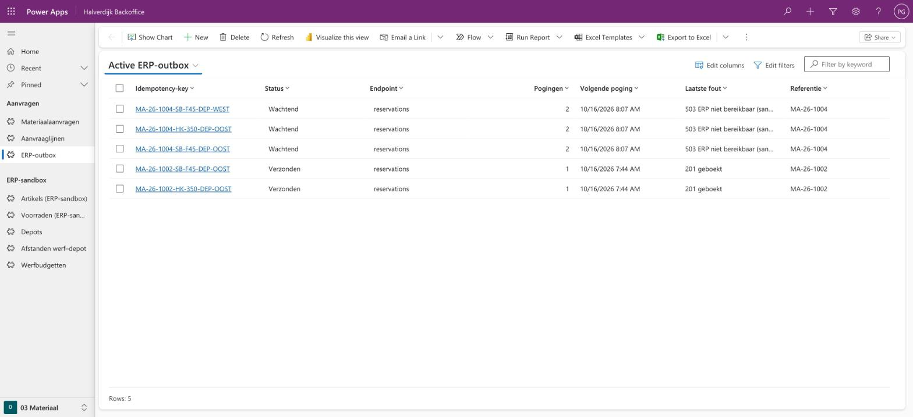

Drie processen.
Eén werkwijze.
Weegbonnen, schadeclaims en materiaalaanvragen bij een bouwgroep: van werfprobleem tot gemeten resultaat, en echt gebouwd in Power Platform.
Philippe Godfroy
Halverdijk Group is fictief. Cijfers zijn aannames of komen uit verzonnen datasets. Workshops zijn gesimuleerd. Gemaakt met AI als bouw- en schrijfpartner.
Mijn aanpak: eerst het probleem, dan de tool
- 0 Mandaatwat vraagt de sponsor, wat mag de analyse kosten
- 1 Discoverstakeholders, houding, workshop, vijf keer waarom
- 2 AnalyseAS-IS, nulmeting, requirements per BABOK-soort
- 3 DesignTO-BE, beslistabellen, user stories
- 4 Validateoptie 0 eerlijk, businesscase, baseline
- 5 Integrateflows, outbox, regels als data
- 6 Implementacceptatie, dan pas go/no-go
- 7 Measurenulmeting, KPI's, stopcriterium
Elke requirement is traceerbaar tot test en KPI: 83 requirements, en CI faalt als een link breekt.
Drie problemen, met een nulmeting
per jaar overtypen; fouten, dubbels en geweigerde stoffen zie je pas bij de factuur of de inspectie
van de verzekeringsaangiftes te laat; dossier pas na 3 dagen, 55% onvolledig
aanvragen via telefoon, mail en WhatsApp; 40% van de spoed toch te laat
De grondoorzaken zijn geen software: regels die in hoofden zitten, een proces zonder eigenaar en klok, en spoed die de werf niets kost.
Van vandaag naar straks
| Vandaag | Straks | ||
|---|---|---|---|
| 01 Weegbonnen | 8 stappen, allemaal manueel | → | AI leest, elf regels beslissen; 66,7% zonder mens (testset); asbest nooit automatisch |
| 02 Schadeclaims | 8 stappen, bellen en Excel | → | melden in de app, dossier in een halve minuut met eigenaar, keten en deadline; de aangiftetermijn bewaakt |
| 03 Materiaal | 7 stappen, mediaan 15 uur | → | weekplanning eerst; app met live voorraad; 43% automatisch goedgekeurd (replay) |
Interactief, met de BPMN-stappen: de schuif "Vandaag en straks".
Oplossing en architectuur
- Eén integratiepatroon: alles naar het ERP via de outbox; een storing gedraagt zich in elke case hetzelfde.
- Wachten op een mens via een status, kleine flows, foutafhandeling in elke flow.
- Regels als data: de business leest en wijzigt een drempel in de app; flows en tests gebruiken dezelfde waarde.
Bewijs: het draait echt

Ontwikkelomgeving met fictieve data, geen productie. Verificatie van 2026-10-16.
Businesscase en roadmap
terugverdientijd; bouwt de integratie die 01 en 02 hergebruiken
zwakste aanname: het verlies per te late aangifte; rendabel vanaf €153
financieel marginaal; compliance en hergebruik dragen de beslissing
Samen €142.704 netto per jaar (rekenmodel). Als simulatie over de tijd: dieptepunt €130.058, terugverdiend in maand 25; in het voorzichtige scenario niet binnen de horizon. Batendashboard.
Wat ik niet weet, en wat ik eerst zou doen
Wat ik niet weet
- Hoe deze processen bij jullie echt lopen: alles hier is fictief.
- Hoe werfleiders echt reageren: houding en workshops zijn aannames.
- Welk ERP, welke licenties: ordes van grootte, geen offerte.
- Of de baten gehaald worden: dat zegt pas een nulmeting.
De eerste 30 dagen
- Meelopen: een ochtend in een depot, een dag op een werf, een dag bij de administratie.
- Per proces één blad: probleem, eigenaar, nulmeting die al bestaat.
- Eén kleine winst kiezen die zonder software kan (zoals de weekplanning).
- Pas dan een backlog, met de proceseigenaar.
Vragen?
Philippe Godfroy · portfolio, fictieve organisatie